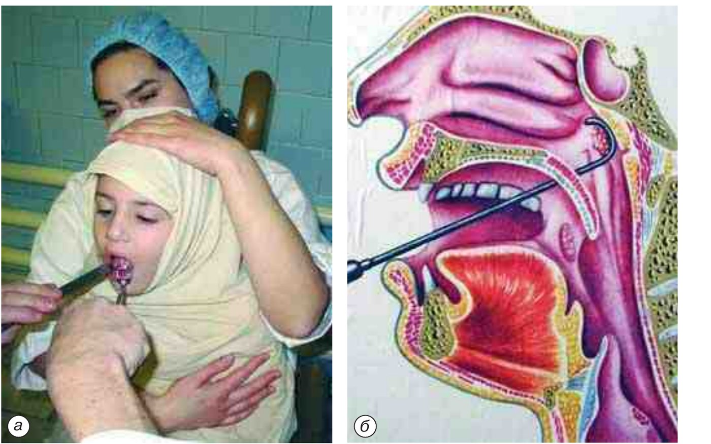
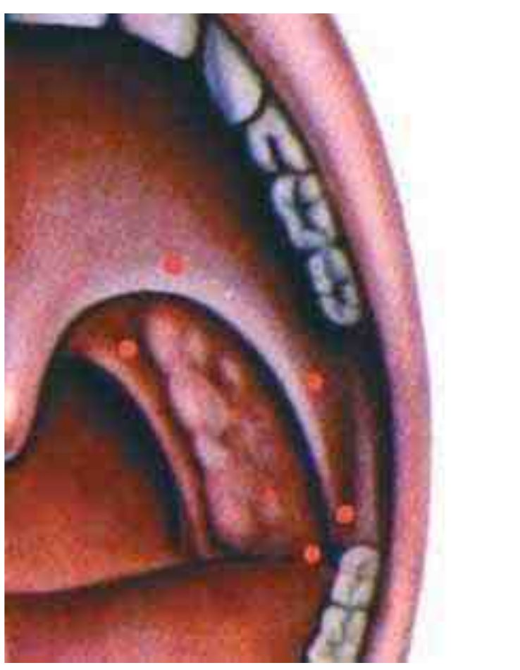
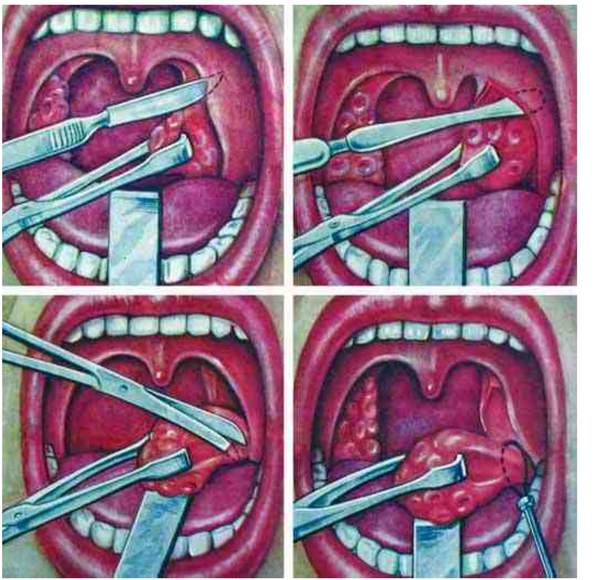
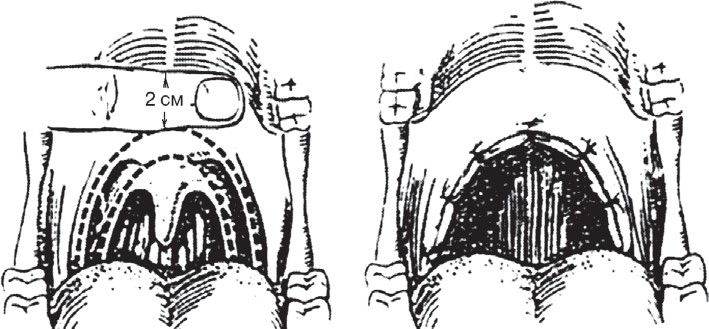
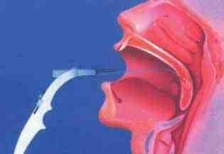
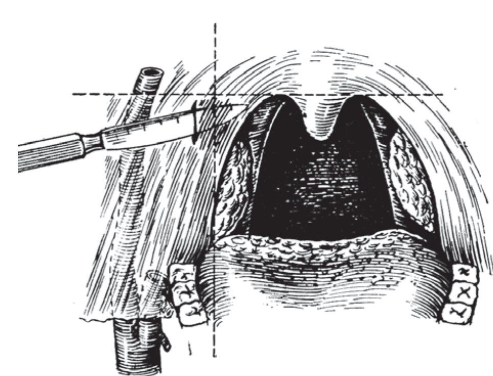
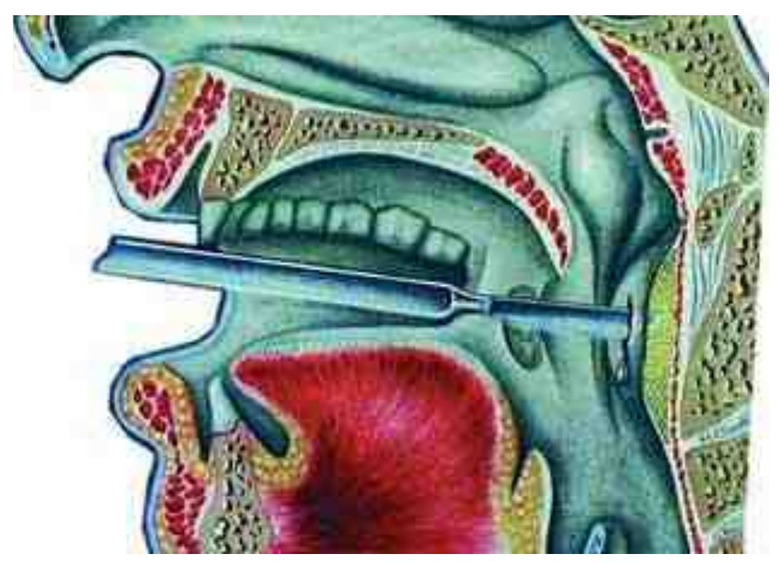
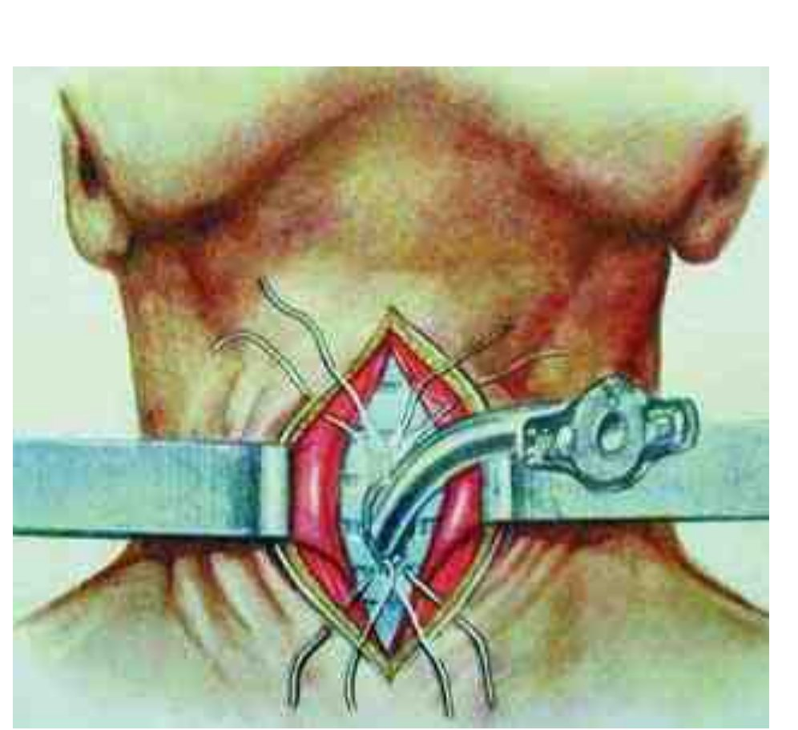
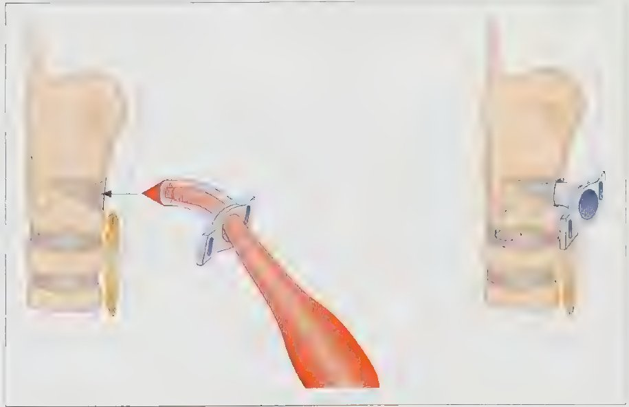
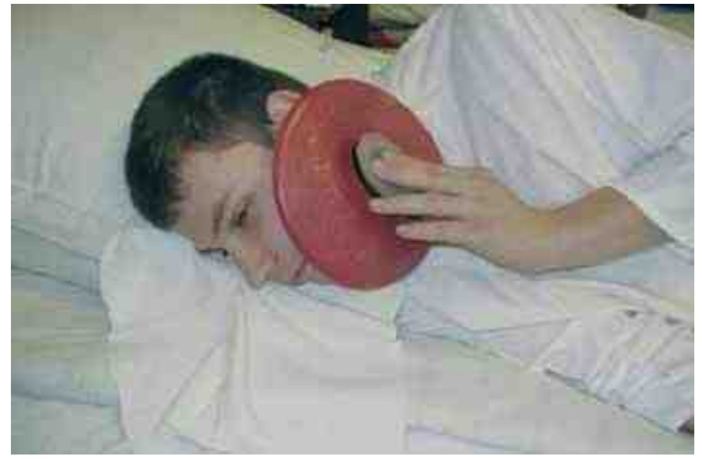

Операции на глотке, гортани и шее
Аденотомия и тонзиллотомия
Показания
Увеличение (гипертрофия) лимфоидной ткани глоточной и нёбных миндалин, вызывающее нарушение носового дыхания или расстройство глотания и речи. В некоторых случаях, например при закрытии устья слуховой трубы аденоидными вегетациями, даже при отсутствии нарушения носового дыхания, также показана аденотомия. по: Пальчун и соавт., с. 250
Аденотомия
Различают 4 степени гипертрофии глоточной миндалины:
- I степень — аденоидные вегетации прикрывают 1/3 сошника.
- II степень — аденоиды прикрывают до 1/2 сошника.
- III степень — аденоиды закрывают 2/3 сошника.
- IV степень — хоаны закрыты аденоидами полностью.
Некоторые авторы выделяют 3 степени гипертрофии аденоидов.
Аденоидные вегетации II–IV степени характеризуются выраженными клиническими проявлениями. У ребенка возникают застойные явления в слизистой оболочке полости носа, которые могут перейти в хронический катаральный ринит, нарушается функция слуховых труб, фонация, падает слух. Вследствие длительного нарушения носового дыхания уменьшается оксигенация крови, ребенок становится вялым, рассеянным, плохо успевает в школе, ухудшается память, часто беспокоит головная боль, могут возникнуть нарушения в развитии лицевого скелета, «аденоидное лицо». В случаях когда аденоидные вегетации распространяются на область устья слуховой трубы, наступает нарушение ее функции и в последующем воспаление среднего уха. Наличие этих и других клинических проявлений и, как правило, отсутствие эффекта от консервативного лечения является показанием для хирургического вмешательства. При гипертрофии аденоидов III и IV степени консервативные мероприятия неэффективны.
Анестезия — эндотрахеальный наркоз, внутривенный наркоз (мидазолам, пропофол и др.) или местная аппликационная анестезия.
Техника операции
Аденотомия производится кольцевидным ножом — аденотомом Бекмана. Существует пять размеров аденотомов, по величине носоглотки подбирается соответствующий размер. Ребенка фиксируют (обертывают) простыней и усаживают на колени помощника так, чтобы его ноги были между колен помощника, который удерживает руками голову ребенка (рис. 3.57, а). Шпателем прижимают язык ко дну рта, аденотом вводят в носоглотку по средней линии и продвигают вверх к куполу носоглотки по заднему краю сошника. При прижимании аденотома к куполу носоглотки и сошника аденоидная ткань входит в кольцо инструмента (рис. 3.57, б). После этого коротким и быстрым движением нож аденотома, прижимая к своду носоглотки и ее задней стенке, смещают книзу. При этом аденоиды срезают у основания и выбрасывают в полость рта, или они остаются висеть на тонкой полоске ткани, откуда их удаляют щипцами. Затем ребенок поочередно высмаркивает обе половины носа. Повторные движения аденотома по бокам глотки необходимо производить с осторожностью, так как при этом можно повредить устья слуховых труб.

В некоторых случаях срезанные аденоиды попадают в нижний отдел глотки и проглатываются. Попадание аденоидной ткани в дыхательные пути опасно ввиду возможной асфиксии. В связи с возможностью таких осложнений предложены аденотомы, снабженные корзинкой или зубчиками, которые удерживают срезанные аденоиды. После операции небольшое кровотечение быстро останавливается, и ребенка отпускают домой через 2–3 ч после контрольного осмотра глотки. Рекомендуется постельный режим в течение первых суток, полужидкая негорячая диета, следует избегать физических нагрузок, резких движений в течение 6–7 дней. По показаниям назначаются анальгетики.
Противопоказанием к аденотомии являются болезни крови (геморрагический диатез, гемофилия, лейкоз и др.), тяжелые заболевания сердечно-сосудистой системы, увеличение вилочковой железы. После острых воспалительных заболеваний дыхательных путей и перенесенных ангин операцию можно производить спустя 1–1,5 мес.
В последние годы в практику внедряется эндоскопическая аденотомия под наркозом с визуальным контролем операционного поля эндоскопом или носоглоточным зеркалом. Предложены модификации аденотомов для левой и правой половины носоглотки [Козлов В. С., 2002], позволяющие под визуальным контролем полностью удалить аденоидные вегетации. Последние могут достаточно глубоко вдаваться в полость носа через хоаны, исходить из заднего края сошника и т. д. Однако, как правило, удаляя аденоиды, необходимо освободить просвет хоан и восстановить носовое дыхание.
Осложнения при аденотомии встречаются относительно редко, наиболее частым является кровотечение в ближайшем послеоперационном периоде, которое иногда требует повторной аденотомии для удаления остатков аденоидной ткани, назначения гемостатической терапии. Возможно инфицирование послеоперационной раны с развитием бокового или заглоточного абсцесса, повреждение устья слуховой трубы. Редко встречается попадание аденоидной ткани в дыхательные пути; если ребенок не может их выкашлять, необходимо удаление с помощью бронхоскопа. по: Пальчун и соавт., с. 250–254
Тонзиллотомия
Показания — гипертрофия нёбных миндалин, суживающая просвет ротоглотки и затрудняющая носовое дыхание, глотание, тембр голоса. Гипертрофию нёбных миндалин условно разделяют на 3 степени. Ориентирами для определения степени гипертрофии миндалин (по Б. С. Преображенскому) являются горизонтальная линия, проведенная через середину передней дужки, и вертикальная — через середину язычка. Горизонтальная линия от середины передней дужки до пересечения с вертикальной делится на три части:
- Гипертрофия I степени — увеличение миндалины на 1/3 этого расстояния.
- II степень гипертрофии — миндалина занимает 2/3 промежутка.
- Если миндалина прикрывает более 2/3 условной горизонтальной линии, это является признаком гипертрофии III степени.
Тонзиллотомия производится, как правило, при III степени гипертрофии нёбных миндалин, которые вызывают затруднение носового дыхания, глотания, нарушение тембра голоса и др. Операция проводится в сидячем положении. Производится смазывание нёбных дужек и нёбных миндалин 10% раствором лидокаина, 2% тетракаином или другими аппликационными анестетиками. Обычно используют тонзиллотом Матье гильотинного типа с вилочкой для удержания срезаемой медиальной части миндаликовой ткани. Удаляют зевную часть нёбных миндалин, достаточную для формирования просвета ротоглотки. Иногда можно использовать и петлю Бохона, в этом случае удаляемая часть миндалины фиксируется зажимом Кохера. Часто у детей с гипертрофией нёбных миндалин имеются показания и к аденотомии, в таких случаях тонзиллотомия производится одномоментно с удалением аденоидов — аденотонзиллотомия (подготовка к операции и послеоперационный уход — как при аденотомии). Необходимо помнить, что тонзиллотомия может приводить к рубцовой деформации лакун миндалин и нарушению ее дренирующей функции в послеоперационном периоде. Операцию производят как в амбулаторных, так и в стационарных условиях с соблюдением таких же правил, как при аденотомии. по: Пальчун и соавт., с. 254–256
Тонзиллэктомия
Операция предполагает полное удаление нёбных миндалин вместе с тонзиллярной капсулой. Показания:
- Хронический тонзиллит простой или токсико-аллергической формы I степени при отсутствии эффекта от консервативного лечения.
- Хронический тонзиллит токсико-аллергической формы II степени.
- Хронический тонзиллит, осложненный паратонзиллитом, или наличие в анамнезе паратонзиллярных абсцессов.
- Тонзиллогенный сепсис при отсутствии эффекта от консервативного лечения.
по: Пальчун и соавт., с. 256
Противопоказанием к тонзиллэктомии являются:
- Наличие порока сердца с явлениями выраженной сердечной недостаточности II–III степени (относительное).
- Тяжелая степень сахарного диабета при наличии кетонурии (относительное).
- Хронические заболевания почек с выраженной почечной недостаточностью (относительное).
- Гемофилия и другие заболевания кроветворной системы, сопровождающиеся геморрагическим диатезом (относительное).
- Активная форма легочного туберкулеза (относительное).
Временно противопоказана операция при наличии кариозных зубов, острых воспалительных заболеваний, во время менструаций, в последние недели беременности.
Анестезия — эндотрахеальный наркоз или местная инфильтрационная. Техника операции. При местной анестезии производится инфильтрация 1% прокаина или 1% лидокаина. Некоторые авторы предлагают добавлять к анестетику 0,1% эпинефрин в соотношении 1:100 000, однако возможны побочные сосудистые эффекты — геморрагия в послеоперационном периоде вследствие вазодилатации. Инъекции анестетика производятся тонкой и длинной иглой, чтобы не загораживать поле зрения, чаще всего из 5 точек (рис. 3.59): над верхним полюсом миндалины; в область среднего отдела миндалины; под нижний полюс миндалины; в область задней дужки миндалины. Во всех случаях игла вводится в толщу слизистой оболочки, затем игла продвигается в мягкие ткани, инфильтрируя паратонзиллярную область, но не глубже примерно 1,5 см. При каждом вколе инъецируется 2–3 мл раствора. Начинать операцию можно через 5–7 мин после окончания инъекций.

Основной задачей операции является полное удаление нёбных миндалин вместе с капсулой. Необходимым условием этого является проникновение конца элеватора за капсулу миндалины, как, например, под надхрящницу при септопластике, после чего отсепаровка легко удается. Миндалину берут на зажим у верхнего полюса, отводят несколько медиально и острым распатором проникают в претонзиллярное пространство позади верхней трети передней дужки. Движениями вверх и вниз отсепаровывают миндалину вместе с капсулой из тонзиллярной ниши, начиная с верхнего полюса, далее средние отделы и доводят до нижнего полюса, не пытаясь полностью отделить ее, так как у нижнего полюса миндаликовой капсулы нет, и отсепаровка будет производиться вместе с подлежащей тканью, что может усилить кровотечение. Иногда в области края передней дужки производят надрез слизистой оболочки скальпелем, и далее острым распатором производится отсепаровка нёбной миндалины вместе с капсулой от подлежащей ткани. При отсепаровке ткань миндалины следует захватывать щипцами вместе с капсулой, иначе миндаликовая ткань рвется и ее трудно удержать.
Нижний полюс миндалины отсекается петлей (чаще всего петлей Бохона), при этом миндалина максимально отводится медиально, а петля прижимается к боковой стенке, чтобы вся миндалина и ее нижний отдел прошли через петлю и были отсечены одним блоком (рис. 3.60).

После произведенной операции необходимо тщательно осмотреть тонзиллярные ниши для выяснения, во-первых — нет ли кровотечения, и, во-вторых — нет ли остатков миндалин. Необходимо удалить остатки миндалин, которые могут быть в верхнем полюсе или в области нижнего полюса. На кровоточащие сосуды при необходимости накладывают зажимы, а затем кетгутовые лигатуры. Необходимо следовать старому правилу, что больной после тонзиллэктомии может быть перевезен из операционной в палату лишь при наличии сухих ниш. При тонзиллэктомии необходимо учитывать расстояние от нёбной миндалины до сосудистого пучка шеи (1,8–2,5 см), расположенного в парафарингеальном пространстве. по: Пальчун и соавт., с. 256–257
Остановка кровотечения при тонзиллэктомии
Одним из наиболее частых и опасных осложнений тонзиллэктомии является кровотечение. Значительное кровотечение может возникнуть как во время операции, так и в последующем, чаще в первые сутки после операции. Сосудистое кровотечение может быть локальным или паренхиматозным, артериальным или венозным, явного или скрытого характера. Во время хирургического вмешательства может возникнуть незначительное кровотечение. В таких случаях прекращать операцию не следует, необходимо быстрее вылущить миндалину с капсулой из ложа, снять петлей и затем уже дифференцировать источник кровотечения и проводить гемостаз. При умеренном или сильном кровотечении необходимо останавливать его уже во время операции. Для этого необходимо вложить в частично уже отсепарованную часть ниши свернутую в шарик марлевую салфетку или наложить зажим Кохера и продолжить операцию, затем лигировать сосуд. по: Пальчун и соавт., с. 257–258
При кровотечении в послеоперационном периоде необходимо произвести тщательную фарингоскопию, тонзиллярную нишу освободить от геморрагических сгустков и произвести осмотр мест наиболее вероятных источников кровотечения:
- В верхнем углу ниши миндалины, между передней и задней дужками (верхняя тонзиллярная артерия — ветвь нисходящей нёбной артерии).
- В среднем отделе тонзиллярной ниши, отведя в сторону переднюю дужку (передняя тонзиллярная артерия — ветвь восходящей нёбной артерии).
- В самом нижнем отделе ниши (ветви язычной артерии).
При идентификации источника кровотечения необходимо наложить кровоостанавливающий зажим Кохера. Иногда бывает достаточно подержать зажим 15–20 мин, затем удалить. Если геморрагия продолжается, производят лигирование сосуда кетгутом. Нередко инфильтрация (обкалывание) области кровотечения анестетиком (2–3 мл 1% раствора прокаина, 1% раствора лидокаина) оказывается достаточной для остановки незначительного кровотечения. Иногда целесообразно тампон или марлевую салфетку, пропитанную кровоостанавливающим препаратом (5% аминокапроновой кислотой), оставить на несколько часов в тонзиллярной нише. Во избежание аспирации тампон крепят к щеке на нитке или накладывают стягивающие швы на дужки поверх введенного в нишу марлевого тампона. Одновременно проводится медикаментозная гемостатическая терапия — этамзилат внутримышечно 2,0 мл; 10% раствор хлорида или глюконата кальция внутривенно, 5% раствор аминокапроновой кислоты внутривенно и др.
При тяжелом и массивном кровотечении невозможно сразу установить, в каком месте находится кровоточащий сосуд. В таких экстремальных случаях необходимо немедленно, не теряя хладнокровия, указательным и средним пальцем ввести в тонзиллярную нишу марлевый тампон и плотно прижать к боковой стенке глотки. Через 3–5 мин можно на секунду удалить тампон, что дает возможность определить кровоточащий участок и наложить на него зажим. Можно прижать тампон к кровоточащей нише специальным зажимом Микулича, одна бранша которого прижимает тампон, а другая лежит снаружи на щеке. В очень редких случаях приходится перевязывать наружную сонную артерию, что не вызывает каких-либо осложнений. по: Пальчун и соавт., с. 258–259
Увулопалатофарингопластика при ронхопатии
Так обозначается хирургическая коррекция мягкого нёба, язычка, нёбных дужек, заднебоковой стенки глотки при ронхопатии. Показания: «респираторные нарушения, связанные со сном» — храп и обструктивное апноэ во время сна; эталоном их диагностики является полисомнография (подробно — в главе «Ронхопатия»). Прежде чем решать вопрос об операции, пациентам рекомендуют снижение массы тела, отказ от курения, исключение миорелаксантов, бензодиазепинов, барбитуратов, антидепрессантов и злоупотребления алкоголем перед сном. При отсутствии результата от этих процедур рекомендуется хирургическая коррекция анатомии структур, участвующих в формировании звукового феномена, — различные варианты увулопалатофарингопластики. Анестезия — эндотрахеальный наркоз или местная инфильтрационная анестезия.
В 1981 г. S. Fujita предложил классификацию анатомических аномалий в глотке и ввел в практику новую операцию по их коррекции, направленную на увеличение воздушного пространства в глотке, названную «увулопалатофарингопластикой». Принцип операции заключается в удалении нёбных миндалин при их гипертрофии, сшивании нёбных дужек, иссечении нёбного язычка с частью мягкого нёба. При нарушении носового дыхания хирургическое вмешательство проводят одномоментно с реконструкцией внутриносовых структур. В тех случаях когда сужение верхних дыхательных путей происходит за счет нёбно-язычной, нёбно-глоточной дужек или нёбного язычка, оперативное вмешательство ограничивается увулопалатопластикой (без удаления миндалин).
Техника операции (увулопалатопластика). С помощью остроконечного скальпеля и ножниц производят удаление гиперплазированных дужек, чаще всего задних, одним блоком с частью мягкого нёба и язычка. Линия разреза проводится на расстоянии 1–1,5 см от свисающего края мягкого нёба, которое удаляют одним блоком с язычком и задними дужками. В некоторых вариантах операцию можно сочетать с нанесением вертикальных насечек на участки слизистой оболочки по ее свободному краю (рис. 3.61). Могут быть различные варианты операции. Наряду с задними удаляют передние дужки и нёбные миндалины. На остатки нёбных дужек, захватывая и нишу миндалин, накладывают швы. Наложение швов на раневую поверхность является обязательным. Эта манипуляция способствует увеличению просвета дыхательных путей и является мерой профилактики образования грубых послеоперационных рубцов. Как правило, пластику в области глотки сочетают с хирургической коррекцией внутриносовых структур.

Кроме вышеуказанного метода, с успехом используют повторные сеансы радиочастотной палатопластики с температурным контролем (сомнопластика). Это лечение подразумевает повторные селективные подслизистые коагуляции на уровне мягкого нёба и язычка (рис. 3.62). Спецификой этой хирургической техники является контроль температуры тканей с помощью термопары, встроенной в коагуляционную иглу, что позволяет регулировать количество освобождаемой энергии. Лазерная увулопалатофарингопластика является альтернативой классической. Этот метод ведет к формированию раневого рубца, оттесняющего мягкое нёбо кверху. Для достижения желаемого результата необходимо в среднем 5 сеансов. В редких случаях причиной развития апноэ может быть патологическое увеличение языка. Хирургическое вмешательство включает срединную глоссэктомию, состоящую в удалении части языка. Опыт проведения таких операций ограничен. по: Пальчун и соавт., с. 259–262

Вскрытие паратонзиллярного абсцесса, абсцесстонзиллэктомия
Показания:
- Абсцесс паратонзиллярной области, чаще всего как результат осложнения хронического тонзиллита.
- Одонтогенный абсцесс паратонзиллярной области.
Клиника паратонзиллярного абсцесса ярко выражена и имеет характерные признаки. Больной жалуется на очень сильную боль в глотке, как правило, одностороннего характера. Из-за выраженности боли с трудом удается проглотить слюну, жидкую пищу. Рот полуоткрыт, речь гнусавая, голова слегка наклонена в больную сторону. При пальпации определяется инфильтрация и резкая болезненность подчелюстной области и угла нижней челюсти. При мезофарингоскопии определяется выраженная асимметрия за счет отека и инфильтрации паратонзиллярной области с распространением отека на язычок и сужением просвета глотки.
Анестезия — местная инфильтрационная с предварительным смазыванием операционной области аппликационным анестетиком. Инфильтрацию необходимо производить в пределах слизистой оболочки. При более глубоком введении иглы анестезирующий раствор изливается в полость абсцесса, не вызывая обезболивания.
Техника операции
Разрез производят в участке наибольшего выбухания, а если такого ориентира нет, то там, где обычно происходит самопроизвольное вскрытие: в месте перекреста двух линий — горизонтальной, проходящей по нижнему краю мягкого нёба здоровой стороны через основание язычка, и вертикальной, которая проходит вверх от нижнего края передней дужки больной стороны (рис. 3.64). Инцизия в этом участке менее опасна с точки зрения ранения крупных кровеносных сосудов. Разрез скальпелем делают в сагиттальном направлении на глубину не более 1 см и длиной 2 см, затем в разрез вводят кровоостанавливающий зажим или инструмент Гартмана и расширяют разрез до 3–4 см, далее вводят глубже в мягкие ткани в поисках полости гнойника, одновременно разрушая возможные перемычки в полости абсцесса. Через сутки края раны вновь разводятся для лучшего опорожнения гнойника.

В тех случаях когда в анамнезе у больного выявляются частые ангины или при затяжном течении процесса, отсутствии эффекта от предыдущих вскрытий абсцессов, при появившихся признаках осложнений — сепсиса, парафарингита, флегмоны шеи, медиастинита и др., показана операция абсцесстонзиллэктомии в остром периоде. При наличии хронического тонзиллита и частых ангинах в анамнезе удаляются обе миндалины, при этом первой удаляется пораженная миндалина. Преимущества такой тактики состоят в том, что полностью элиминируется гнойный очаг при любой его локализации, обеспечивается быстрое выздоровление не только от паратонзиллита, но и от хронического тонзиллита и, как правило, исключаются рецидивы заболевания, предупреждаются его тяжелые осложнения. Технические трудности и тяжесть операции вполне преодолимы.
После инфильтрационной анестезии мягких тканей вокруг миндалины 1% раствором прокаина или 1% лидокаина уменьшается тризм, что улучшает обзор. Тонзиллэктомия производится по известным правилам. Производится разрез острым скальпелем по самому краю передней нёбной дужки, распатором выделяется верхний полюс нёбной миндалины. При этом в некоторых случаях вскрывается абсцесс, который в значительной мере отслоил миндалину от ее ложа, отсепаровывают оставшиеся участки до нижнего полюса, накладывают петлю Бохона и отсекают нёбную миндалину. После смены инструментов (в связи с гнойной первой операцией) производят тонзиллэктомию с другой стороны. Назначается общая антибактериальная и симптоматическая терапия. по: Пальчун и соавт., с. 262–264
Хирургические вмешательства при нагноении клетчаточных пространств шеи
Окологлоточное (парафарингеальное) пространство делится на заглоточное и боковое глоточное, выполненное рыхлой соединительной тканью, клетчаткой, лимфатической тканью. Через него проходит сосудисто-нервный пучок шеи, а также имеется прямое сообщение с позадипищеводной клетчаткой, средостением. Это обусловливает важность своевременной диагностики и лечения гнойного воспаления этой области.
Вскрытие заглоточного абсцесса
Заглоточный (ретрофарингеальный) абсцесс — гнойное воспаление лимфатических узлов и рыхлой клетчатки между фасцией глоточной мускулатуры и предпозвоночной фасцией. Встречается у детей до 6–7 лет. Клиническая картина ярко выражена. Ребенок ведет себя беспокойно, постоянно плачет, отказывается от приема пищи, повышается температура тела до фебрильных цифр. Дети старшего возраста жалуются на выраженную боль в глотке, усиливающуюся при глотании. Анестезия — местная инфильтрационная с предварительным смазыванием задней стенки глотки аппликационными анестетиками. В некоторых случаях — наркоз.
Техника операции
При выявлении абсцесса заглоточного пространства показано его немедленное вскрытие. При этом необходимо предупредить аспирацию гноя в нижележащие пути с помощью предварительного отсасывания гноя при пункции. Разрез делают в месте наибольшего выбухания, но не далее 1 см от средней линии (рис. 3.65). Для предупреждения слипания краев разреза их разводят инструментом Гартмана или корнцангом. После вскрытия рекомендуется полоскание полости рта антисептиками, назначается общая антибактериальная терапия.

Вскрытие флегмоны шеи
Нагноение клетчатки бокового глоточного пространства относится к тяжелым и опасным заболеваниям, требующим экстренного хирургического вмешательства. Больной жалуется на выраженную боль в гортаноглотке, усиливающуюся при глотании, поворотах головы, повышение температуры тела. При внешнем осмотре имеется асимметрия подчелюстной области и шеи за счет инфильтрации и отека. Резкая боль при пальпации подчелюстной области и угла нижней челюсти. Анестезия — наркоз или местная инфильтрационная.
Техника операции
Оперативное вмешательство может осуществляться наружным или внутриротовым подходом: наружный применяют при распространенном процессе, при необходимости ревизии внутренней яремной вены. Производят разрез кожи вдоль переднего края грудино-ключично-сосцевидной мышцы в области угла нижней челюсти, затем углубляются, послойно рассекая кожу, подкожную клетчатку, поверхностную фасцию, поверхностную мышцу шеи. При обнаружении наружной яремной вены ее отводят в сторону или пересекают между двумя шелковыми лигатурами. Далее вскрывают наружное фасциальное влагалище грудино-ключично-сосцевидной мышцы, разводят ее тупым путем и рассекают задний листок фасциального влагалища мышцы. Тупым путем отводят в стороны шилоподъязычную и двубрюшную мышцы и проникают в клетчатку бокового глоточного пространства. Зажимом или пальцем производят ревизию этой области по направлению кпереди, где располагается нёбная миндалина, до обнаружения гнойника.
Раскрытие гнойника должно быть широким, а при больших его размерах производят наложение контрапертуры для обеспечения более полного дренирования. Широкое вскрытие флегмоны важно и в целях обеспечения оксигенации пораженных тканей, так как часто причиной флегмоны шеи может быть анаэробная флора. После вскрытия абсцесса и опорожнения гнойника полость промывают 3% раствором перекиси водорода, антисептиками и растворами антибиотиков, дренируют перчаточной резиной. Накладывают повязку. Перевязки делают дважды в сутки. В послеоперационном периоде назначают антибиотики, дезинтоксикационную терапию, симптоматические средства. Внутриротовой способ — вскрытие парафарингеального абсцесса через тонзиллярную нишу производят после абсцесстонзиллэктомии на стороне поражения, затем производят ревизию и широко раскрывают гнойник щипцами Гартмана или мягким сосудистым зажимом. Следует иметь в виду возможность травмирования крупных сосудов, поэтому вмешательство требует большой осторожности. по: Пальчун и соавт., с. 264–266
Трахеотомия, трахеостомия и коникотомия
Эти хирургические вмешательства направлены на восстановление адекватного дыхания путем вскрытия полости трахеи (трахеотомия), вскрытия трахеи и соединения швами кожных краев раны с краями разреза трахеи (трахеостомия), вскрытия полости гортани через коническую связку (коникотомия) одномоментным разрезом всех слоев мягких тканей наружным доступом. Показания:
- Декомпенсированная стадия стеноза гортани.
- Необходимость продления интубации трахеи на срок свыше 3 суток.
- Как этап при других оперативных вмешательствах.
- В стадии асфиксии — экстренная коникотомия с последующей трахеостомией.
Необходимо отметить, что при соответствующих показаниях врач обязан выполнить эти операции практически в любых условиях и без промедления. по: Пальчун и соавт., с. 266
По отношению к перешейку щитовидной железы в зависимости от уровня разреза различают:
- Верхнюю трахеотомию — над перешейком щитовидной железы.
- Нижнюю трахеотомию — под перешейком щитовидной железы.
- Среднюю — через перешеек щитовидной железы с предварительным его рассечением и перевязкой.
Следует отметить, что такое деление является условным ввиду различных вариантов расположения перешейка щитовидной железы по отношению к трахее. Существует также разделение в зависимости от уровня разреза колец трахеи. При верхней трахеотомии разрезают 2–3 полукольца, при средней — 3–4 и при нижней — 4–5 полукольца трахеи. Анестезия — местная инфильтрационная. При коникотомии — без обезболивания.
Техника операции
Верхняя трахеотомия: положение больного обычно лежачее, под плечи необходимо положить валик, чтобы выпятить гортань и облегчить ориентировку. Иногда, при быстро развивающейся асфиксии, производят операцию в полусидячем или сидячем положении больного. Прощупывают подъязычную кость, вырезку щитовидного и бугорок перстневидного хрящей. Для ориентировки можно бриллиантовой зеленью отметить срединную линию и уровень перстневидного хряща. Производят послойный разрез кожи и подкожной клетчатки от нижнего края щитовидного хряща на 4–6 см вертикально книзу строго по срединной линии. Рассекают поверхностную фасцию, под которой обнаруживается «белая линия» шеи — место соединения грудино-подъязычных мышц. Последнюю надсекают и тупым путем нежно отсепаровывают мышцы. После этого обозревается часть перстневидного хряща и чуть ниже перешеек щитовидной железы, который имеет коричнево-красный цвет и на ощупь мягкий. Затем производят разрез капсулы железы, фиксирующей перешеек, последний смещается книзу и удерживается тупым крючком. После этого становятся видны кольца трахеи, покрытые фасцией.
До вскрытия трахеи необходим тщательный гемостаз. Для фиксации гортани, экскурсии которой при асфиксии значительно выражены, вкалывают острый крючок в дугу перстневидного хряща и подтягивают гортань кверху. Во избежание сильного кашля с помощью шприца с иглой в трахею вводят несколько капель 2–3% раствора тетракаина. Остроконечным скальпелем вскрывают 2–3 полукольца трахеи в виде окошка диаметром около 1 см. Нельзя разрезать первое полукольцо, поскольку в последующем трахеотомическая трубка будет травмировать перстневидный хрящ и вызовет хондрит. Скальпель должен проникать на глубину не более 8–10 мм, чтобы не поранить заднюю, лишенную хряща стенку трахеи и прилежащую к ней переднюю стенку пищевода. Величина разреза должна соответствовать величине трахеотомической трубки. Поскольку при трахеотомии остается расстояние между краями кожной раны и краями разреза трахеи в виде открытой раневой поверхности, которая в последующем долго заживает, формируют трахеостому. Для этого накладывают 4 шва шелковыми нитями между трахеей и краями кожной раны (рис. 3.66). Края отверстия в трахее раздвигают с помощью расширителя Труссо1 или Киллиана и вводят трахеотомическую трубку.

В некоторых случаях — в детской практике, а также при стенозе, вызванном дифтерией гортани и трахеи, — используется назо(оро)трахеальная интубация гибкой трубкой из синтетического материала. Интубация производится под контролем прямой ларингоскопии, продолжительность ее не должна превышать 3 суток. Если необходим более длительный срок интубации, выполняется трахеотомия, поскольку длительное пребывание интубационной трубки в гортани вызывает ишемию слизистой оболочки с последующим ее изъязвлением, рубцеванием и стойким стенозом органа. по: Пальчун и соавт., с. 266–268
Точка зрения зарубежных авторов
Первую трахеостомическую трубку надёжно фиксируют не менее чем на 3 суток, пока не сформируется канал, и меняют через 7 дней, тогда же снимают швы. Тесёмки завязывают с обеих сторон шеи при нейтральном положении головы: если затянуть их при разогнутой шее, они окажутся слишком длинными, и трубка может быть выкашляна. Манжету, как правило, сдувают через 12 ч после операции, когда риск аспирации миновал. Вдыхаемый воздух не согревается и не увлажняется в верхних дыхательных путях, поэтому количество и вязкость трахеального секрета возрастают; в первые дни часто необходимы санация трахеи и увлажнение вдыхаемого воздуха, чтобы трубку не закупорили корки. Больному нужны письменные принадлежности для общения.
Наиболее частым осложнением трахеостомии и самой частой причиной смерти от неё является кровотечение, как правило из вен щитовидной железы или её перешейка; при значительном кровотечении рану ревизуют и перевязывают сосуд, тампонада раны допустима лишь как временная мера. Редко возникает воздушная эмболия при вскрытии крупных вен шеи. Трубка может сместиться в претрахеальное пространство: больной какое-то время продолжает дышать, но одышка постепенно нарастает, а трахеостомическое отверстие тем временем закрывается, и трубку уже не удаётся ввести обратно. При закупорке трубки и плотно ушитой коже развивается подкожная эмфизема шеи. Трахеопищеводный свищ возникает при ранении задней стенки трахеи во время операции или при давлении конца трубки на неё и проявляется аспирацией, несмотря на раздутую манжету. Трахеоартериальный свищ, чаще с плечеголовным стволом, встречается главным образом после облучения и при низкой трахеостомии и проявляется внезапным массивным кровотечением: трубку немедленно меняют на трубку с манжетой, раздувают манжету и незамедлительно ревизуют рану. К поздним осложнениям относятся трахеокожный свищ и стеноз трахеи. по: Scott-Brown, т. 3, с. 1044–1045
Коническая (перстнещитовидная) связка между щитовидным и перстневидным хрящами лежит непосредственно под кожей и легко пальпируется; её рассекают поперечным разрезом. Инструмент, которым вскрывают просвет гортани, держат перпендикулярно коже и не извлекают, пока между щитовидным и перстневидным хрящами не введена трубка: иначе слои тканей смещаются и закрывают доступ к просвету. В каждой укладке для неотложной помощи полезно иметь готовый набор для коникотомии. Коникотомию как можно скорее переводят в обычную трахеотомию, поскольку повреждение перстневидного хряща грозит стенозом гортани. по: Probst и соавт., с. 379

Удаление инородных тел глотки и гортани, трахеи и бронхов
Показания — инородные тела полых органов. Анестезия — интубационный наркоз, местная аппликационная анестезия. Извлечение инородного тела из гортанного отдела глотки иногда затруднено. Эту манипуляцию следует выполнять после введения подкожно 1 мл 0,1% раствора атропина сульфата и 1 мл 1% раствора тримеперидина под местной аппликационной анестезией при непрямой ларингоскопии гортанными щипцами или при прямой гипофарингоскопии прямым корнцангом или щипцами. Реже инородное тело из грушевидного кармана удаляют с помощью эзофагоскопа. При нахождении крупного инородного тела, например зубного протеза, в гортаноглотке не рекомендуется удалять его с применением силы во избежание ранения стенок глотки. Если не удается его расшатать и извлечь, то производят операцию — фаринготомию. Удаление инородного тела из гортаноглотки следует выполнять в оториноларингологическом стационаре. При развитии стеноза гортани вследствие попадания крупного инородного тела в гортаноглотку следует попытаться удалить его гортанными изогнутыми щипцами, если же это не удается, то необходимо срочно произвести трахеостомию или коникотомию.
Из носоглотки инородное тело может быть удалено изогнутыми щипцами или инструментом Гартмана. Удаление облегчается при оттягивании мягкого нёба резиновым катетером. Крупное инородное тело из носоглотки может быть продвинуто в ротоглотку с помощью зонда, введенного через полость носа. При этом нужно помнить о возможности смещения и проскальзывания инородного тела в пищевод или гортань. При осложнениях, обусловленных инородными телами, оперативное вмешательство необходимо сочетать с активной антибактериальной и дезинтоксикационной терапией.
Диагноз инородного тела гортани устанавливают при ларингоскопии (у детей — при прямой ларингоскопии). Под контролем гортанного зеркала, используя изогнутые гортанные щипцы, в большинстве ситуаций удается извлечь инородное тело. В редких случаях, при выраженном стенозе гортани, показана экстренная трахеотомия. Иногда крупное инородное тело у входа в пищевод может вызвать тяжелый стеноз гортани, причем при прямой ларингоскопии не удается обнаружить инородное тело. В таких случаях следует с помощью ларингоскопа произвести прямую гипофарингоскопию (эзофагоскопию), включающую осмотр входа в пищевод.
Больному с инородным телом трахеи показана экстренная трахеоскопия с последующим удалением инородного тела. Если инородное тело локализуется в нижнем отрезке и бифуркации трахеи или в бронхе, то трахеотомия никакого облегчения больному не принесет, однако значительно улучшит условия его удаления. Методом выбора является неотложное эндоскопическое исследование трахеи через естественные пути (верхняя трахеоскопия) и удаление инородного тела. В осложненных случаях (отек, инфильтрация слизистой оболочки трахеи, общие реакции и др.) удаление инородного тела производится через предварительно наложенную трахеостому (нижняя трахеоскопия). В настоящее время в подавляющем большинстве случаев инородные тела бронхов удаляют при верхней бронхоскопии с помощью дыхательного бронхоскопа. Манипуляцию производят под наркозом с применением миорелаксантов короткого действия. С введением в практику дыхательных бронхоскопов значительно расширились возможности трахеобронхоскопии. по: Пальчун и соавт., с. 268–269
Ведение больного после операций в глотке
Среди операций в глотке наиболее распространенной является тонзиллэктомия. Операция обычно завершается тщательным гемостазом и внимательным осмотром тонзиллярных ниш. После операции больного отвозят на сидячей каталке в палату и укладывают в постель таким образом, чтобы он лежал на боку со слегка опущенной на грудь головой (рис. 3.67). На шею соответственно операционной ране на 20–30 мин помещается пузырь со льдом. Как правило, после операции в первые сутки у больного наблюдается обильная саливация. Больной не должен глотать слюну, поэтому ему рекомендуют дышать открытым ртом, под голову подкладывают пеленку для сбора стекающей слюны с примесью крови. В первый день больному показан абсолютный покой, он должен избегать глотательных движений, ему не следует откашливаться. Больному запрещается разговаривать, при крайней необходимости что-либо сообщить ему разрешают написать. При отсутствии признаков геморрагии через 6–8 ч после операции больной может выпить несколько глотков воды, которая должна быть холодной или комнатной температуры, без газа.

На ночь больному целесообразно назначить анестетики и седативные средства, обычно парентерально (тримеперидин, диазепам, трамадол, кеторолак, метамизол натрия в комбинации со спазмолитиками и др.). Со следующего дня режим смягчается. Уже утром больной получает жидкую, не горячую и не раздражающую пищу, ему разрешают разговаривать, подниматься, однако режим остается преимущественно постельным еще 2–3 дня. В этот период ему следует воздерживаться от употребления горячей, твердой пищи, но с каждым днем эти ограничения становятся все менее строгими.
Обычно первые 3–4 дня тонзиллярные ниши бывают покрыты серовато-белым фибринозным налетом, сначала сплошным, затем — островками. В этот период отмечается выраженный в различной степени отек дужек, мягкого нёба, язычка, припухание и болезненность регионарных лимфатических узлов. Температура в первые несколько дней после операции обычно нормальная или субфебрильная, однако возможно вечером в день операции и на 2-й день повышение температуры до 38 °С и выше. Это может быть следствием заглатывания крови, ее распада и усиленного всасывания. К 5–7-му дню тонзиллярные ниши практически полностью освобождаются от налетов, и их поверхность оказывается покрытой грануляциями, при этом несколько увеличивается болезненность при глотании и разговоре, в этот период иногда на 2–3 дня отмечается повышение температуры тела до субфебрильных цифр. С середины 2-й — начала 3-й недели начинается эпителизация раневой поверхности в глотке, и это сопровождается значительным снижением выраженности болевых ощущений.
При благоприятном течении послеоперационного периода на 5–7-й день после операции пациент выписывается на амбулаторное долечивание; однако ему рекомендуют избегать физической нагрузки еще в течение 3–4 нед. У больных хроническим тонзиллитом с сопряженными заболеваниями (ревматизм, полиартрит, пиелонефрит, эндокардит и др.) в целях профилактики обострения этих процессов операция должна проводиться в стадии стойкой ремиссии сопряженного заболевания и через 1–1,5 мес после перенесенного обострения хронического тонзиллита. В послеоперационном периоде рекомендуется провести профилактический курс антибиотиками пенициллинового ряда (амоксициллин + клавулановая кислота и др.). по: Пальчун и соавт., с. 269–270
Ведение больного после операций на гортани
При эндоларингеальных вмешательствах, в том числе микрохирургических, в первые сутки после операции, как правило, развивается реактивный отек тканей гортани, выраженность которого зависит от объема вмешательства и от того, насколько травматично проходила операция. Существует также опасность кровотечения, возможность присоединения инфекции верхних дыхательных путей. Сразу после операции больной должен находиться в постели, лучше в полусидячем положении, рекомендуется холод местно на область гортани. В первые сутки после операции показан режим молчания, голосовой покой рекомендуется и в последующие несколько суток. В течение 4–6 ч после операции не рекомендуется прием пищи, затем назначается щадящая диета с исключением горячей, раздражающей пищи, кофе, крепкого чая, газированных напитков. Абсолютно противопоказано курение, прием спиртных напитков.
Из медикаментозных средств назначаются противоотечные средства (гипертонический раствор глюкозы, антигистаминные, мочегонные, гормональные препараты), антибактериальная терапия, гемостатические препараты. Больной должен находиться под наблюдением дежурного врача-оториноларинголога, при нарастании реактивных явлений вносятся коррективы в медикаментозную терапию, главным образом в целях предупреждения стеноза гортани. При нарастании признаков стеноза врач должен быть готов наложить трахеостому. После стихания в гортани реактивных изменений приступают вначале к дыхательной гимнастике, а позже и к дозированным голосовым тренировкам под наблюдением врача-фониатра. по: Пальчун и соавт., с. 270–271
Примечания
1Trousseau A. (1801–1867) — крупный французский терапевт. (по: Бабияк и соавт., т. 2, с. 645)
Источники
- Пальчун В. Т., Лучихин Л. А., Магомедов М. М. Руководство по практической оториноларингологии. — М.: Медицинское информационное агентство, 2010. — Гл. 3, раздел 3.2 «Операции в области глотки, гортани и на шее»: с. 250–271 (рис. 3.57, 3.59–3.62, 3.64–3.67).
- Watkinson J. C., Clarke R. W. (eds.) Scott-Brown's Otorhinolaryngology, Head and Neck Surgery, 8th ed. — Boca Raton: CRC Press, 2018 (т. 3, гл. 72 «Upper airway obstruction and tracheostomy», с. 1044–1045).
- Probst R., Grevers G., Iro H. Basic Otorhinolaryngology: A Step-by-Step Learning Guide. — Stuttgart: Thieme (коникотомия, с. 379, рис. 17.32).
- Бабияк В. И., Накатис Я. А., Говорун М. И. Оториноларингология. Руководство. Т. 2. — СПб.: Питер, 2009. — Примечания к главам (сведения об учёных): с. 645.
Раздел «Учебник» — справочная теория, не клинические рекомендации. Тактика ведения пациента — по разборам КР.